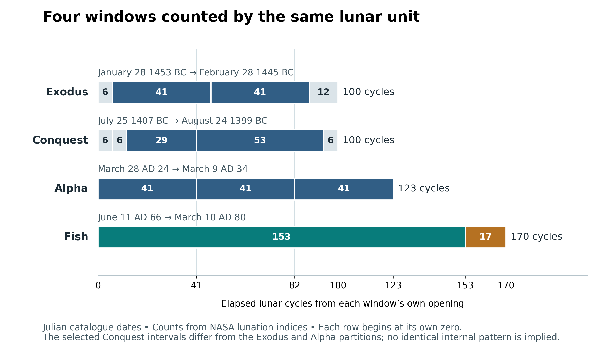
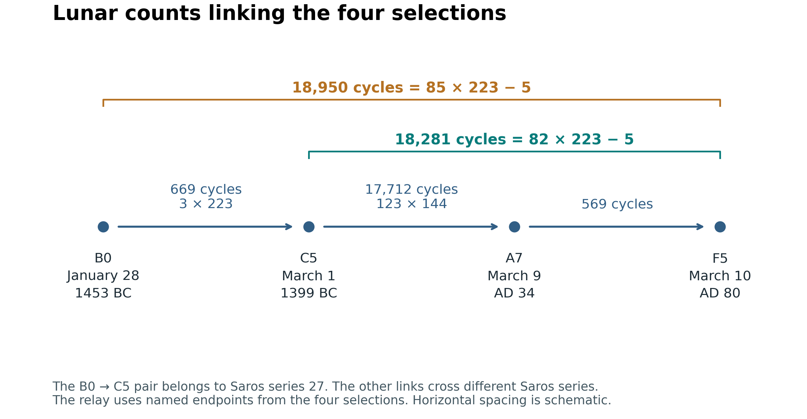
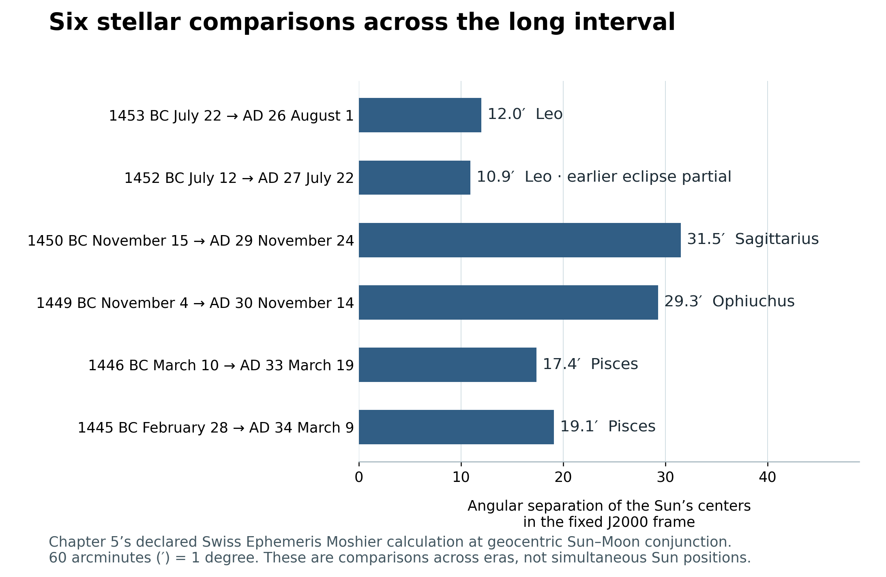
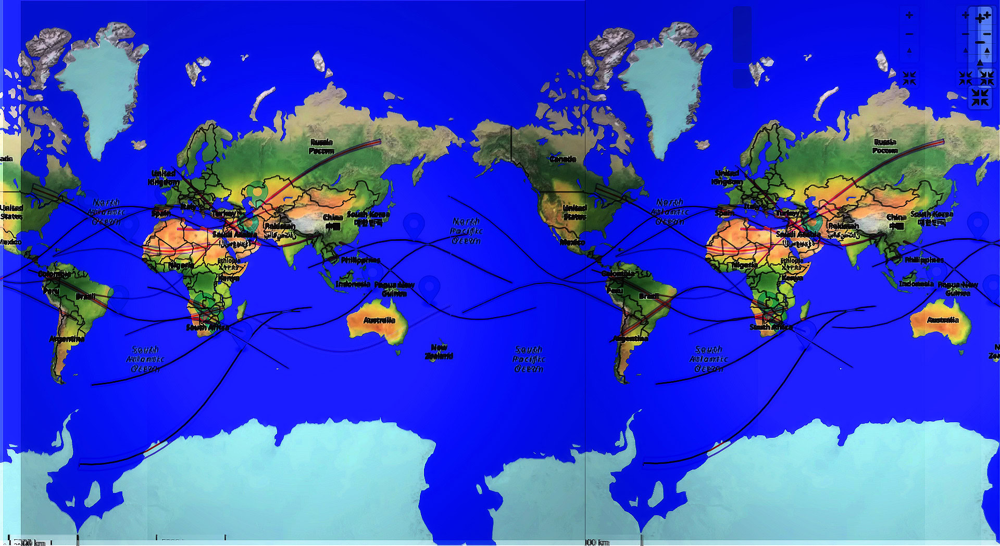

One Witness across the Ages
Book 2 · Celestial Signs of the First Advent · Chapter 15
From the Exodus to the Cross and the nations
John hears the song of Moses and of the Lamb in the same heavenly scene. The deliverance from Egypt and the victory of Christ belong together before God:
Great and wonderful are Your works, O Lord God Almighty! Just and true are Your ways, O King of the nations!
Revelation 15:3 BSB [1]
That joining gives this chapter its direction. We have followed signs around Christ’s coming, returned to Abraham’s promise, and considered the Exodus, the crossing into the land, the Cross, and the witness beyond Jerusalem. I now bring the four solar-eclipse groups together. Their dates and intervals let us compare particular events across that history. Scripture gives the history its subject.
I read the recurring images and counts as a witness to the same Lord. The earlier deliverance leads toward the Lamb, and the Lamb’s authority reaches the nations. Looking from heaven lets us hold those widely separated earthly events in view together. The centuries between them remain real.
The four windows within the history
The four solar groups surround the Exodus, the Conquest, Christ’s ministry and Passion, and the period of Jerusalem’s fall and the Gospel among the nations. These are the selections examined in Chapters 5, 6, 9, and 14 of this book. Their opening and closing dates are not automatically dates of the historical events they accompany.[2]
The primary chronological anchors remain the Exodus in 1446 BC, Israel’s entry into the land in 1406 BC, the preferred Passion in AD 33, and the destruction of Jerusalem’s Temple in AD 70. AD 30 remains an allowed Passion chronology in the Repository. The later Fish selection runs through AD 80, so it openly continues beyond the Temple’s fall.
All dates in the following table are Julian catalogue labels. The last column counts elapsed lunations, the succession of lunar cycles from one astronomical new Moon to the next. NASA’s numbered lunations allow that count to be checked independently of a reconstructed Hebrew month name.[3]
| Group | Opening and closing dates | Elapsed lunar cycles |
|---|---|---|
| Exodus | January 28 1453 BC to February 28 1445 BC | 100 |
| Conquest | July 25 1407 BC to August 24 1399 BC | 100 |
| Alpha | March 28 AD 24 to March 9 AD 34 | 123 |
| Fish | June 11 AD 66 to March 10 AD 80 | 170 |
The selected central-path events number 6 in the Exodus window, 6 in the Conquest window, 7 in Alpha, and 5 in Fish: 24 in total. They comprise 16 total, 6 annular, and 2 hybrid eclipses. The deep partial of July 12, 1452 BC is an additional stellar comparison. Including that partial in the full comparison registry gives 25 events, while the central-path selection remains 24.[4]
The selections do not exhaust the eclipse record within their windows. The Alpha window, for example, contains nine total eclipses; its seven selected members serve the comparisons developed earlier. That distinction remains visible when we bring the groups together.


The diagram uses the same lunar unit in every row. It also shows that the groups have different internal arrangements. The Exodus window contains an opening of 6 cycles, two spans of 41, and a final 12. Alpha contains three consecutive spans of 41. The Conquest selection reaches its hundred by another route. Fish divides into 153 followed by 17. The repeated features become clearer when each arrangement retains its own shape.
The two windows of 100 lunar cycles
The Exodus and Conquest windows share a count of 100 elapsed lunar cycles. Between the end of the first and the beginning of the second are 475 more. The whole arrangement is therefore:
100 | 475 | 100 lunar cycles.
From the beginning of one window to the beginning of the next are 575 cycles. The same count joins their endings. The arithmetic is 100 + 475 = 575 = 23 × 25.[5]
That repeated measure connects the signs around departure and inheritance. God brings the people out under Moses and brings them across the Jordan under Joshua. The promise survives the wilderness generation and the deaths of the men who led it. The two celestial windows stand around those stages of the account, while the forty years of wilderness history keep their own chronological place.
The hundred-cycle windows do not have identical durations in days. NASA’s published eclipse maxima give 2952.780 days for the Exodus window and 2952.699 for the Conquest window, both about 2953 days. Their named-date differences are 2953 and 2952 days respectively, because the maxima occur at different hours. Equal numbers of lunar cycles can have slightly different elapsed lengths.
The temple and priestly associations considered earlier belong to the interpretation of the count. Aaron’s age, Moses’ age, the mourning months, and the people’s entry into their inheritance give the numbers a scriptural setting. The sky does not independently supply the date of Moses’ death or the hour when Israel crossed the Jordan.
The recurring forty one cycles
The clearest shorter recurrence is 41 lunar cycles. In Alpha, three consecutive 41-cycle spans extend from the opening eclipse to the closing one. Comparing the dates at the same clock time gives 1211 days for each span. The actual intervals between published eclipse maxima are 1210.609, 1210.964, and 1211.113 days: about 1211 days in each case.[6]
The Exodus comparison repeats two 41-cycle spans within its wider hundred. The Conquest set includes a 41-cycle span and an overlapping 82-cycle span. Those relationships carry the same smaller unit through different selections; they do not divide every window into identical pieces.
An eclipse year is about 346.62 days, the interval associated with the Sun’s return to the same lunar node. Thus, about 1211 days is close to three and a half eclipse years. An ordinary solar year is longer. Revelation’s 42 months and 1260 days also keep the measures stated in the text. I consider the shorter celestial recurrence beside that prophetic language without replacing one count with the other.
The distinction matters to the reading. A recurring period of witness can be considered alongside John’s account of witnesses, persecution, and preservation. Its force depends on naming what actually recurs. Here that is 41 lunar cycles, with a duration near 1211 days.
The links between the eras
The earlier chapters established several long connections. They are easier to follow together when the endpoints are named before their numbers.
The January 28, 1453 BC hybrid and the March 1, 1399 BC hybrid both belong to Saros series 27. Their separation is 669 lunar cycles, exactly 3 × 223. A Saros contains 223 lunations, so this is a genuine three-Saros relation within one series.[7]
The six stellar pairings between the Exodus era and the selected AD 26–34 eclipses have another common count: 18,281 lunar cycles. That equals 82 × 223 − 5. The March 1, 1399 BC hybrid and the March 10, AD 80 annular eclipse share that same long cycle difference. The subtraction of five belongs to the relation. These are comparisons across different Saros series, rather than returns separated by exactly eighty-two Saros periods.[8]
Between the Conquest and Alpha selections, the four Egyptian-year comparisons of Chapter 7 each span 17,712 lunar cycles, or 123 × 144. Their date differences are 523,045 or 523,046 days. The former equals 1433 × 365, using Egypt’s unreformed civil year as a stated unit. The lunar count and Egyptian day volume describe the same pairings in different measures.[9]
One relay brings all four selections into view. It passes from the opening Exodus hybrid through the Conquest hybrid, the final Alpha total, and the final Fish annular eclipse:


The first step is 669 cycles. The next is 17,712, followed by 569. Together they give 18,950 lunar cycles, equal to 85 × 223 − 5. The last two steps together give the 18,281-cycle comparison. The whole relation can therefore be stated as 3 Saros to the Conquest hybrid, followed by 82 Saros minus 5 lunar cycles to the Fish ending.[10]
The relay is a comparison of selected endpoints. It does not imply that each group lasts one Saros interval, or that each eclipse in a group returns along the same track. What it supplies is a set of definite relations joining the earlier deliverance, the Conquest, and the later witness around Christ.
Aaron’s 123 years can be considered beside the factor 123 in the long comparison and the Alpha window’s 123 lunar cycles. The connection is numerical and typological. Multiplying 123 by 144 lunar cycles does not convert Aaron’s ordinary lifespan into months. His age and the astronomical interval retain their different units.
The stars behind the counts
Chapter 5 compared the Sun’s position at conjunction in six earlier and six later eclipses. A fixed J2000 coordinate frame was used so that the positions could be placed on the same grid across the centuries. The results deserve to remain visible in the synthesis.[11]


The pairings return to small stellar neighborhoods, with angular differences of about 0.2 to 0.5 degrees in that calculation. The two Lion comparisons are tighter than the other four. The November pairings fall in Sagittarius and Ophiuchus under modern constellation boundaries; the closing pairings fall in Pisces. Traditional drawings of the Serpent Bearer, the Scorpion, or the Fishes can help explain an image, while the measured regional names remain accurate.
The later Fish sequence has its own progression. Its first two eclipses are in Gemini, its AD 77 event is in Ophiuchus, its AD 78 event is in Libra, and its final event is in Pisces. That is the sequence I read beside witness, conflict, weighing, and gathering.
Seasonal month names and stellar positions also measure different things. Precession changes the relation between the seasons and the stars over long periods. A return to a stellar neighborhood can therefore occur under a different reconstructed Hebrew month name. The common stellar frame helps us see the positional relationship; the calendar requires its own stated rules.
The maps and the land
The supplied composite brings the proposed path pictures together on a repeated world map. I include it because it shows the larger visual reading that first drew these groups into one study. Its curves invite the reader to look across the earth as a whole.[12]


This older composite has no date beside each curve. The individual chapters and dated registry therefore remain necessary for identifying events. Repeating the world map displays a path across the edge of a flat projection; it does not add another eclipse. The resemblance to letters, a river, or fish belongs to my reading of the selected curves and their arrangement.
As Chapter 9 explains, my judgment that the first-century letter and fish forms are the clearest comes from my personal inspection of eclipse maps from 3000 BC to AD 3000. That judgment remains subjective. The full record is available for readers to examine and reach their own conclusions; Chapter 14 applies this invitation to the fish outlines.
The land of Israel matters because the history has real places. God brings a people into a land, Christ teaches and dies in Judea, and witnesses carry His name outward. Which towns lay under a central shadow must be checked separately from their place in the biblical account.
Chapter 6 identified the opening Conquest eclipse’s central route across the Pacific and South America. Chapter 14 showed the AD 80 eclipse as a deep partial at Jerusalem in the declared NASA model, with annularity at Alexandria. Cairo and the Memphis proxy are partial in that model. A proposed threefold pattern of triple intersections within the Land still requires a separate geometric check.[13]
An ancient ground track depends on the assumed history of Earth’s rotation. A change in that assumption can move the path east or west while leaving the event and its broad stellar setting intact. The maps let us consider the proposed imagery. Exact claims about a city, a border, or an overlap need their own calculation and uncertainty range.
The heavenly perspective remains larger than any one ground track. A sign over an ocean still belongs to creation. Its meaning can concern people who never stood beneath its central shadow, and it can be understood in heaven before people recognize it.
Adding the windows and averaging their dates
The four elapsed lunar-cycle counts add to:
100 + 100 + 123 + 170 = 493 cycles.
That is a sum of four separate windows, not one continuous historical interval. At the stated reference mean lunar month of 29.53059 days, it represents about 14,558.581 days, or 39.860 solar years. The resulting forty-year comparison is approximate and combines windows separated by centuries.[14]
Alpha’s 123 intervals also give 124 included month positions, as Chapter 9 explained. A formal arrangement of 100 + 100 + 124 produces 324, or 18 × 18. That can be retained as a composition of the stated counts. Its final term counts included positions, whereas the first two terms count elapsed cycles. The first three windows actually span 323 elapsed cycles. The distinction prevents the symbolic arrangement from silently replacing the measured total.
A similar distinction applies to the average date of a group. A Julian day number, or JDN, places a date on a continuous astronomical day count. Adding the five Fish date references and dividing by five gives 1748137.4 when each date is represented by its noon JDN. Using midnight for every member gives 1748136.9. The averages differ by half a day because the reference changed. Neither is an additional eclipse in AD 74.[15]
The choice of members matters more. The six Exodus stellar comparisons include the deep partial and omit the opening hybrid. The six central-path members include the hybrid and omit the partial. Their mean date references differ by 88.5 days, even though both selections belong to the same study. An average can summarize a defined set; it cannot decide which set the interpretation ought to use.
These checks help identify the strongest recurring features. The exact lunar-cycle differences do not depend on averaging. The paired stellar positions have named instants and a common coordinate frame. The numerical interpretation can build on those features with its assumptions visible.
Scripture the heavens and number
The four solar groups belong within the wider book. The Woman and Child, the royal conjunctions, the Manger, the Messenger, and the Morning Star give other parts of the proposed witness. Their events and measures were examined in the earlier chapters. They enter this synthesis through their relation to Christ’s coming and authority, rather than being added indiscriminately to a solar-eclipse total.
The scriptural account gives me the way to read them. Abraham is promised blessing for the families of the earth. Moses leads his descendants out. Joshua brings them into the land. Christ accomplishes the greater deliverance, and His witnesses carry the message among the nations. John sees that earthly history within a conflict and a victory that include heaven.
The heavens supply events that can be described independently of my interpretation. Number supplies relationships that can be recalculated. Scripture gives the identity and purpose toward which I read those events and relationships. I bring the three together because I believe the Maker of the heavens is also the Lord of the history.
The calendar belongs within that order. Conjunction, the first visible crescent, and a festival’s opening evening are distinct. The AD 80 March conjunction precedes the equinox; its Nisan association requires the Passover-after-equinox rule stated in Chapter 14. Likewise, the October AD 78 lunar eclipse can be placed on the first evening of Tabernacles under the declared month-opening construction, without claiming a recovered Jerusalem proclamation. The celestial date remains fixed while the historical calendar identification carries its conditions.[16]
The inherited names and pictures also need their proper place. Acts records the people at Lystra calling Barnabas Zeus and Paul Hermes, and the apostles refusing the worship offered to them. At Athens Paul can use words from Greek poets while directing his hearers to the Creator and the risen Christ. Familiar imagery can be taken up within that proclamation. My planetary and constellation associations follow that direction of reading.[17]
The audience includes heaven
Paul states openly that the gathering in Christ has a heavenly audience:
… through the church, the manifold wisdom of God should be made known to the rulers and authorities in the heavenly realms …
Ephesians 3:10 BSB [18]
This perspective is central to the book. Heaven’s knowledge of Christ is not limited to what people noticed from one city. The Gospel accounts themselves place heavenly witnesses beside the birth, the Resurrection, and the Ascension. John sees the Lamb’s death within the worship of heaven. Earthly events have an audience beyond the people living through them.
That does not remove the need to say what was visible. A claim about the Moon rising over Jerusalem still needs a horizon calculation. A claim about someone recognizing a sign needs evidence of that recognition. The occurrence of the event and its possible meaning for the heavenly host are larger questions than the surviving human report.
The Exodus, the Conquest, the Cross, and the gathering among the nations can therefore be considered together without flattening their differences. The sea and the Jordan are different crossings. The deaths of Moses and Aaron are not the death of Christ. Yet Scripture brings the earlier servants and their work toward the Son, and Revelation joins the song of Moses to the song of the Lamb.
I see the celestial comparisons within that same movement. Their repeated counts, returning stellar settings, and proposed images give us particulars to examine. The subject remains the One whose work they may be declaring. The final chapter returns to that purpose: seeing the events of earth from heaven while keeping the people, places, and suffering on earth in view.
Source notes
1. Revelation 15:2–4 BSB. Verse 3 names the song of God’s servant Moses and of the Lamb. The quotation reproduces the song’s words within that verse; the superscript footnote marker is omitted. The passage supplies the scriptural joining, not dates for these eclipse groups. Return
2. Current Canon: File 5 Exodus Target, File 6 Judges Bridge, and File 13 Christological Matrix. The 1446/1406 BC anchors, preferred AD 33/possible AD 30 Passion, and AD 70 actual destruction remain distinct from celestial-window endpoints. Historical 6 BC and received 1 BC/AD 1 birth frameworks also remain distinct. Return
3. NASA/GSFC 1500–1401 BC solar catalogue, 1400–1301 BC catalogue, and AD 1–100 catalogue. The accompanying registry retains each selected catalogue number, civil and astronomical year, noon-reference JDN, greatest-TD instant, type, lunation index, and Saros series. Civil BC/AD has no year zero. NASA’s ancient date label refers to astronomical time; it is not automatically the local UT date. Return
4. The Exodus central selection comprises the January 1453 BC hybrid and five totals; the July 1452 BC partial is a separate positional comparison. Conquest has four totals, one annular, and one hybrid; Alpha has seven selected totals; Fish has five selected annulars. Thus the 24 central-path members comprise 16 T + 6 A + 2 H. Adding the partial gives 25 distinct registry entries. These are not exhaustive window catalogues or a count of all eclipses visible in Israel. Return
5. NASA lunation indices give 100 | 475 | 100, with 575 start-to-start and end-to-end. Greatest-TD durations of the two windows are 2952.779884 and 2952.699190 days; the gap is 14026.555347 days, about 14027. Their named-date differences are 2953, 2952, and 14027 respectively. The equal 575-cycle links have date differences of 16980 and 16979 days, not identical physical lengths. The 23 × 25 interpretation does not make 575 cycles exactly 46 years or establish a new Caleb chronology. Chapter 6 retains Caleb’s age-85 land division and rest onset at 1400n BC, with the rest envelope extending to 1399n BC. Return
6. Alpha A1→A3, A3→A5, A5→A7 each count 41 lunar-index steps and 1211 common-clock date-days. NASA’s published greatest-TD intervals are 1210.608889, 1210.964109, and 1211.113403 days. Chapter 9 gives the complete selected series and the two additional totals. The shorter celestial unit is about 3.494 eclipse years, not exactly three and a half ordinary solar years, 42 months, or 1260 days. Chapters 5–6 establish the overlapping early comparisons. Return
7. January 28, 1453 BC B0→March 1, 1399 BC C5: 669 indices = 3 × 223, both Saros 27. NASA’s greatest-TD interval is 19755.978553 days, about 19756. See NASA solar-eclipse periodicity. A Saros is a cycle relation, not a universally fixed integer number of days or an unchanged terrestrial path. Return
8. Each of the six Chapter 5 stellar pairs and C5→F5 has 18,281 index steps = 82 × 223 − 5. Their series numbers differ. The C5→F5 greatest-TD interval is 539848.569850 days, about 539849. The five-lunation offset cannot be dropped from a claimed exact recurrence. Return
9. Chapter 7, Egyptian Years and the Calendar of Israel. C1→A2, C3→A3, C4→A4, C5→A7 each count 17,712 cycles = 123 × 144. Their named-date differences are 523045, 523046, 523045, 523046 days. E = 1433 × 365 = 523045. This is a declared day-volume comparison, not proof that the endpoints were observed Egyptian New Years. Aaron’s age is explicit in Numbers 33:39; the scaling is interpretive. Return
10. The defined B0→C5→A7→F5 relay has 669 + 17712 + 569 = 18950 cycles. The middle and final steps equal 79 × 223 + 95 and 2 × 223 + 123. Thus their sum is 82 × 223 − 5, and the full relay is 85 × 223 − 5. The raw Section 9 “3 + 79 + 3” is only a rough shorthand, not that exact decomposition. The diagram’s horizontal spacing is schematic. Return
11. The six Sun-center angular separations reproduce Chapter 5’s declared Swiss Ephemeris Moshier calculation at geocentric ecliptic-longitude conjunction in the J2000 equatorial frame: 12.0′, 10.9′, 31.5′, 29.3′, 17.4′, and 19.1′. These previously checked values are reused with unchanged inputs and meaning; they are not relabeled as fresh DE431 results. Sixty arcminutes make one degree. The partial BC partner remains included only for the position comparison. The older all-pairs-within-12.16′ statement is not retained. Return
12. Supplied original IMG0114, “All 24 eclipses together2a.jpg,” preserved unchanged. It is an older repeated-map composite with overlaid paths and software controls. Its individual strokes are not date-labeled or newly certified against all 24 registry identities. It illustrates the proposed overall visual reading; neither its filename nor its appearance verifies a path count, precise ancient overlap, or historical reading of the map. The dated registry and individual chapter maps govern the numerical discussion. Return
13. Chapters 6 and 14 and the latter’s NASA/Swiss calculation record. For AD 80 the NASA Besselian model uses ΔT 9743.3 seconds: Jerusalem partial about 96.2% covered, Alexandria annular, Cairo/Memphis partial. The raw “five Land crossers/three triple nodes” assertion is unestablished; no corrected map-wide crossing count or uniqueness assertion is substituted. Ancient rotation uncertainty affects ground longitude. Local visibility is separate from global occurrence and theological meaning. Return
14. Elapsed cycles sum to 493. At 29.53059 days per reference mean lunation this is 14558.58087 days, or 39.860073 years of 365.2422 days. It falls about 51.107 days short of forty such reference years. Summing the four actual published greatest-TD intervals gives 14558.876782 days, about 14559, because real month lengths vary. These are sums of separated windows. The raw 494 mixed Alpha’s 124 included positions with the other elapsed counts. The first three elapsed windows sum to 323; 324 is retained only as the explicitly mixed formal composition discussed in the text. There are 497 included positions if each of the four windows is counted inclusively on the same basis. Return
15. Mean date references: six Exodus stellar mates 1192306.5; six Exodus central members 1192218.0; Conquest 1208967.0; Alpha 1731834.857143; Fish 1748137.4, all using the stated noon references. The Fish midnight-reference mean is 1748136.9. On the same basis, the two mean-to-mean differences are 16660.5 days for the stellar Exodus set→Conquest and 16302.542857 for Alpha→Fish. They are properties of defined selections, not observed events. The raw precise AD 70→AD 74 “1260/1270” claim is not used as a recovered festival or destruction date. Conditional arithmetic for its proposed endpoints is preserved with the calculations. Return
16. File 12 Calendrical Physics and Chapter 14’s declared calculations and calendar alternatives. The March 10 AD 80 conjunction precedes the March 22 equinox; the following full Moon is March 24. Opening a schematic month on the first evening after conjunction differs from a historical first-crescent proclamation. The October 9 AD 78 partial lunar eclipse’s Tishri 15 association assumes September 25 evening as Tishri 1. No new historical intercalation ruling is supplied here. Return
17. Acts 14:11–18 BSB and Acts 17:24–31 BSB. The apostles reject divine honors at Lystra; Paul quotes poets at Athens within a proclamation of the Creator, repentance, and resurrection. The source’s wider comparative mythology is not needed to establish this scriptural point. No uniform ancient identity for every modern constellation drawing is assumed. Return
18. Ephesians 3:6–11 BSB, excerpt from verse 10. Ellipses identify the excerpt’s limits; the quoted words are unchanged. Paul explicitly gives the church’s witness a heavenly audience. Applying that perspective to the individually established celestial events is the author’s interpretation. Relevant passages across the book also include Luke 2:8–14, 24:4–7; Acts 1:9–11; Revelation 5:6–14; and Luke 9:30–31, where Moses and Elijah speak of Christ’s departure at Jerusalem. Return
Scripture quotations are from the Berean Standard Bible. Eclipse predictions by Fred Espenak, NASA’s GSFC. Supplied artwork is preserved with its source identification; the interpretation is the author’s.
← Previous: Chapter 14 — The Fish and the Nations
Book 2 contents
Next: Chapter 16 — Earth Seen from Heaven →